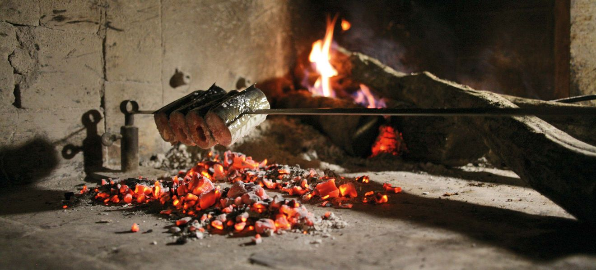
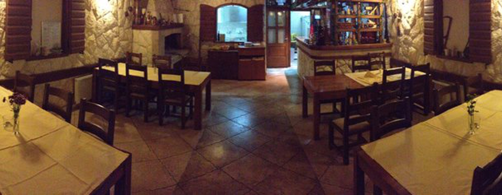
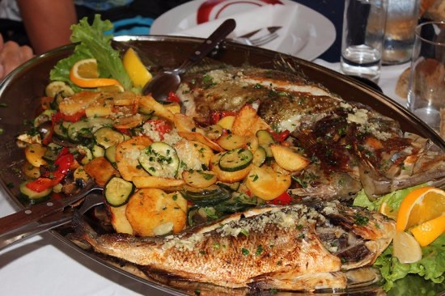
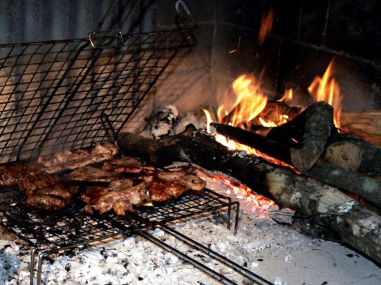
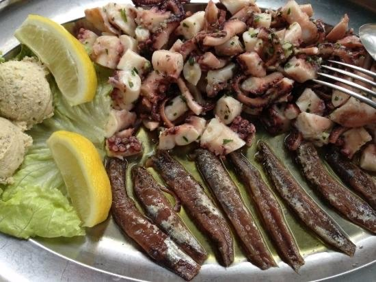
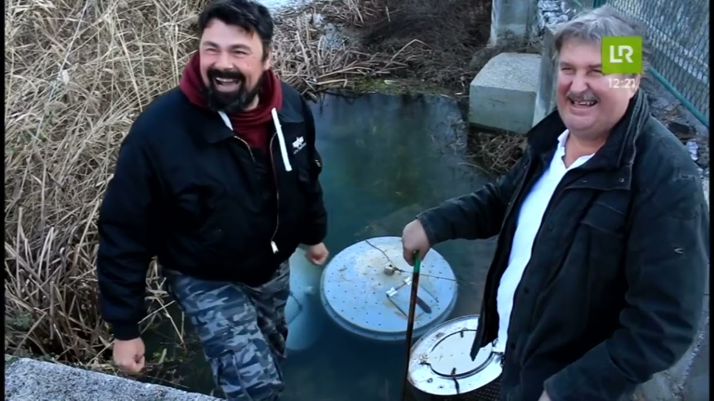
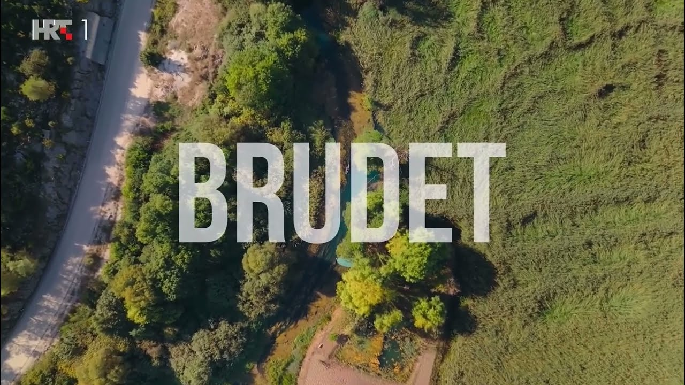

Žabe i jegulja u brudetu
Žabe pirjane s lukom i jegulja u gustom, slatko-slanom brudetu — jelo zbog kojeg se u Neretvu vraćaju generacije.

Od 10 do 23 · svaki dan · Prud, Metković
Jegulja i žabe iz neretvanskih rukavaca, slatkovodni škampi, riba s gradela i meso ispod peke — u konobi koja se nalazi tik uz vrilo rijeke Norin.

O konobi
Konoba Vrilo nalazi se uz samo vrilo rijeke Norin, nekoliko minuta vožnje od Metkovića prema granici s Bosnom i Hercegovinom. Prostor je uređen u tradicijskom dalmatinskom duhu — ribarske vrše, drvene barke i simbol žabe, zaštitni znak neretvanske kuhinje.
Kuhinju vodi chefica Stojka Taslak. Iz neretvanskih rukavaca na stol dolaze jegulja i žabe, slatkovodni škampi, riječna i morska riba, a iz peke meso i domaći kruh koji se umače u slatko-slanu frotu. Zaokružuju ih vina iz obližnjih neretvanskih vinograda.
S potpisa kuće
Rijeka daje okus, peka daje miris. Ovo su jela koja gosti najčešće spominju u recenzijama.
Žabe pirjane s lukom i jegulja u gustom, slatko-slanom brudetu — jelo zbog kojeg se u Neretvu vraćaju generacije.

Jegulja s ražnja te riječna i morska riba s gradela, uz blitvu, krumpir ili sezonsko povrće.

Janjetina, teleća koljenica i piletina ispod peke, uz domaći kruh pečen pod istom pekom.

Hobotnica ispod peke, salata od hobotnice i lignje s gradela — hladna i topla predjela za početak.
Jelovnik
Ponuda se mijenja dnevno, prema ulovu i sezoni. Za jela ispod peke i veće grupe preporučujemo rezervaciju dan prije.
Galerija
Video · s terena
Dvije snimke s kanala Zvonimir Taslak — jedna s vode, jedna iz kuhinje. Prva vas provede kroz Neretvu, druga pokazuje kako se kuha pravi brudet.


„Žabe pirjane s lukom posebno su ukusne, poslužene s domaćim kruhom ispod peke, idealnim za umakanje u slatko-slanu frotu. Jegulja — jedan od najcjenjenijih delikatesa doline — peče se na ražnju.“
Blog · Priče iz doline
Recepti, običaji i jela koja se u Neretvi ne mijenjaju stoljećima. Pišemo ono što i kuhamo — od rukavaca do palente.
 Iz pressa
Iz pressa
BBC Travel je 2013. posvetio cijeli članak neretvanskoj tradiciji žaba — i pisao ga iz naše kuhinje u Prudu. Gault&Millau trinaest godina poslije daje 13/20. Što su napisali i koja adresa treba provjeru.
Pročitaj cijelu priču →
Recept i priča
Nekad sirotinjsko jelo od jegulja i žaba, danas gastronomski simbol doline i zaštićeno kulturno dobro. Priča o brudetu, zlatna pravila pripreme i klasični recept za 4–6 osoba.
Pročitaj cijelu priču →Posjetite nas
Uz vrilo rijeke Norin, na cesti prema granici s Bosnom i Hercegovinom.
| Ponedjeljak – Četvrtak | 10:00 – 23:00 |
|---|---|
| Petak – Subota | 10:00 – 23:00 |
| Nedjelja | 10:00 – 23:00 |